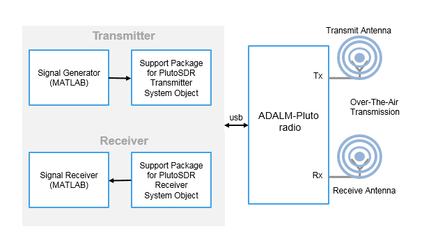

Transmit data to Analog Devices ADALM-PLUTO radio
The comm.SDRTxPluto
System object™ is a signal source that transmits data to an Analog Devices® ADALM-PLUTO radio. This connection enables you to simulate
and develop various software-defined radio applications.
The following diagram shows the interaction between MATLAB®, the comm.SDRTxPluto
System object, and the radio hardware.

After connecting a PlutoSDR device to a USB port on the host computer, to transmit data to the radio hardware:
Create the comm.SDRTxPluto object and set its properties.
Call the object with arguments, as if it were a function.
To learn more about how System objects work, see What Are System Objects?
The ADALM-PLUTO radio has a single channel for sending data from the
comm.SDRTxPluto
System object. The SDR System object accepts a column vector signal of fixed length.
When the comm.SDRTxPluto
System object is called during simulation, it is possible that the host did not send
valid data to the radio hardware. To determine when valid data is present, use the
underflow output argument.
txPluto = sdrtx('Pluto')
txPluto = sdrtx('Pluto',Name,Value)Name set to the specified Value. You can
specify additional name-value pair arguments in any order as
(Name1,Value1,...,NameN,ValueN). Unspecified properties take
default values.
Example: tx =
sdrtx('Pluto','CenterFrequency',3.5e9,'BasebandSampleRate',2.0e6);
txPluto( transmits signal data from
an PlutoSDR device, as represented by a data)comm.SDRTxPluto
System object.
To use an object function, specify the
System object as the first input argument. For
example, to release system resources of a System object named obj, use
this syntax:
release(obj)
Configure an ADALM-PLUTO radio with a RadioID set to
usb:0. Transmit at 2.4 GHz with a baseband rate of 1 MHz. Use a
DPSK modulator as the data source.
txPluto = sdrtx('Pluto','RadioID','usb:0','CenterFrequency',2.4e9, ... 'BasebandSampleRate',1e6,'ChannelMapping',1); modObj = comm.DPSKModulator('BitInput',true); for counter = 1:20 data = randi([0 1],30,1); modSignal = modObj(data); txPluto(modSignal); end
When transmitting and receiving using one ADALM-PLUTO radio, individual transmitter and receiver objects use the same underlying radio hardware setting for frequency correction.
rx = sdrrx('Pluto'); tx = sdrtx('Pluto'); rx.ShowAdvancedProperties = true; tx.ShowAdvancedProperties = true; % This uses the default value of 0 for FrequencyCorrection % of the received and transmitted data. data = rx(); tx(zeros(1024,1)); % This uses 1 for FrequencyCorrection of the received and transmitted data. rx.FrequencyCorrection = 1; data = rx(); tx(zeros(1024,1)); % This uses 2 for FrequencyCorrection of the transmitted and received data. tx.FrequencyCorrection = 2; tx(zeros(1024,1)); data = rx();
The last update of the radio hardware frequency correction
setting is made by the transmitter object, the radio uses the setting as updated by the
value set with tx.FrequencyCorrection the next time the receiver
object is executed.
Use the info object function to get
information from the connected PlutoSDR. The actual values used in the radio are shown
by info and can be vary slightly from
the values specified in the object.
tx = sdrtx('Pluto');
info(tx)tx =
comm.SDRTxPluto with properties:
Main
DeviceName: 'Pluto'
RadioID: 'usb:0'
CenterFrequency: 2.4000e+09
Gain: -10
ChannelMapping: 1
BasebandSampleRate: 1000000
Show all properties
ans =
struct with fields:
Status: 'Full information'
CenterFrequency: 2.4000e+09
BasebandSampleRate: 999999
SerialNum: '104473222a870010050020009db5d52277'
Gain: -10
RadioFirmwareVersion: "0.26"
ExpectedFirmwareVersion: "0.26"
HardwareVersion: "B0"Introduced in R2017a